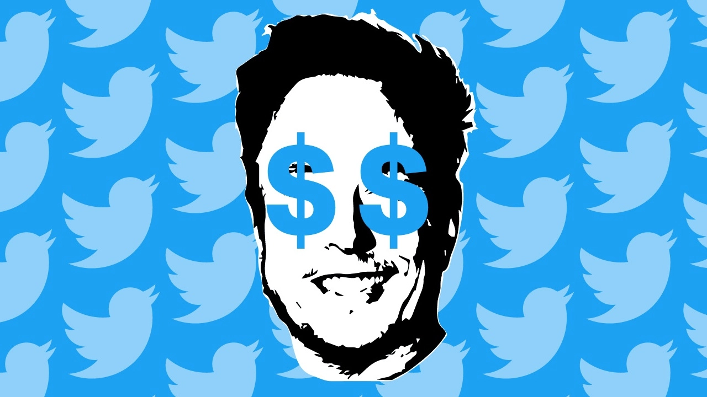

Elon Musk açıkladı: Twitter’dan para kazanma herkese açıldı!
Twitter para kazanma özelliği tüm dünyada erişime açılıyor. Artk bir abonelik üzerinden bir hesaba destek verebilirsiniz.

Elon Musk, Twitter üzerinden para kazanma sistemini genişletiyor. Sosyal medya devinin yöneticisinden gelen açıklamaya göre Twitter kullanıcıları, abonelik üzerinden para kazanmaya başlayacak. Bu; fotoğraf, video veya tweet’lerin abonelere özel olarak paylaşılabileceği anlamına geliyor.
Twitter’da abonelik ile para kazanma mümkün
Twitter, içerik oluşturucuların platformdaki paylaşımlarından para kazanmalarını sağlayacak yeni bir girişim başlattı. Son abonelik hizmeti, kullanıcı merkezli iyileştirmelere odaklanıyor. Twitter kullanıcıları, şirketin belirlediği fiyat aralıklarından birini seçerek hesaplara ücretli şekilde abone olabilecek.
Bir kullanıcıya abone olan kişiler ise oluşturucunun özel içeriğine erişim hakkı kazanacak. Bu içeriğin tweet, fotoğraf veya video olabileceğini belirtmek gerekiyor. Elon Musk, özelliğin artık tüm dünyada aktif edildiğini duyurdu.
Twitter, platformdaki ödemeler için Stripe ile iş birliği yaptı. 50 dolardan itibaren para kazanmaya başlayacak olan hesap sahipleri, 50 bin dolara kadar olan gelirlerde yüzde 97’ye varan ödemeler alacak. Ayrıca abonelik hizmetleri iade edilemeyecek ve aylık olarak otomatik yenilenecek.
Bu özelliğin tanıtılması, aslında ücretli Blue hizmetini takip ediyor. Musk, Blue’nun ve reklamların şirket için önemli bir gelir kaynağı olacağını söyledi.
Öte yandan Twitter kurucusu Jack Dorsey, geçtiğimiz ay Twitter benzeri yeni uygulamasını kullanıma açtı. Davetiye koduyla giriş yapılabilen Bluesky, iPhone’da dikkat çeken bir indirme sayısına ulaştı. Son rapor, Bluesky’in 245 binden fazla iPhone kullanıcısı tarafından indirildiğini gösterdi.
Peki sizler bu konu hakkında neler düşünüyorsunuz? Görüşlerinizi aşağıdaki Yorumlar kısmından bizlerle paylaşabilirsiniz.